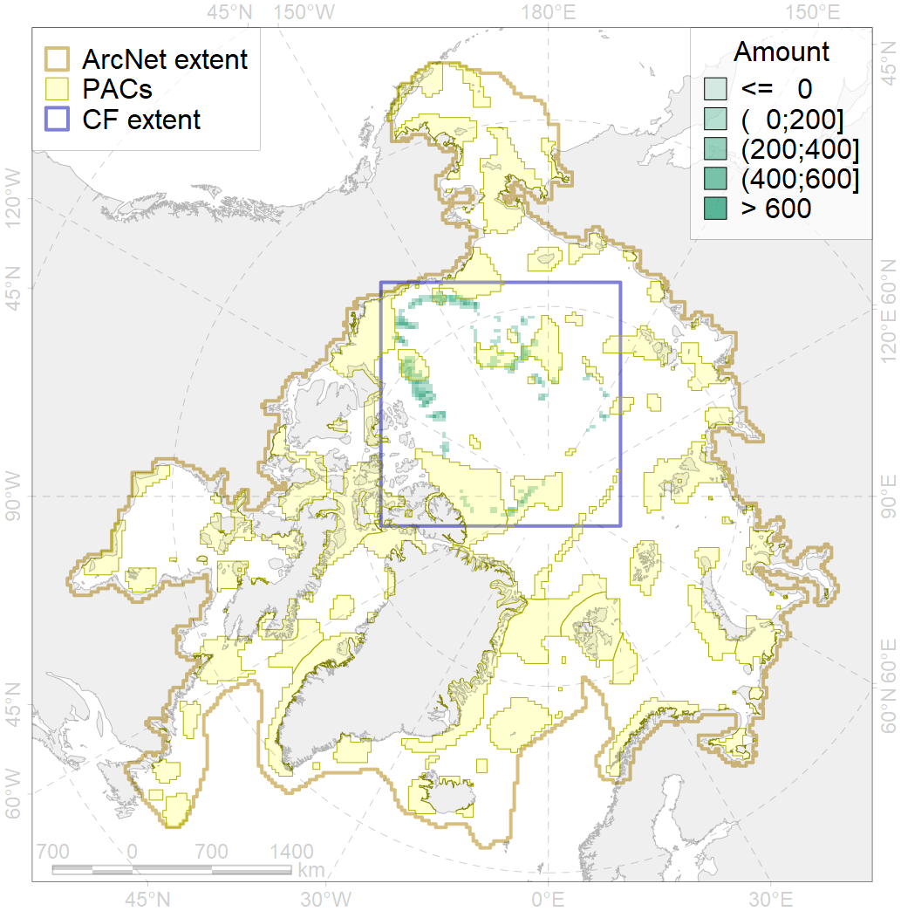

7183

| CF ID | 7183 |
| CF Name | VII.3.5. Deep parts of canyons (below slope) |
| Time Period | At least last 100 years |
| Source(s) | Harris et al., 2014; Carmack, Wassmann, 2006 |
| Seasonality | January - December |
| Depth Horizon | |
| Methodology | Data obtained from the literature |
| Author Name | V. Spiridonov, W. Merritt |
| Notes | |
| Conservation Target Set in the Scenario | 0.2314771 |
| Conservation Target Achieved in the Scenario | 0.324 (Scenario: 139.8%) |
| PAC ID | Proportion in the PAC | Contribution to ArcNet Target Achievement | PAC’s Contribution to the Achieved Target |
|---|---|---|---|
| 54 | 1.4% | 6.1% | 4.4% |
| 55 | 5.4% | 18.4% | 13.2% |
| 57 | 8.6% | 35.6% | 25.5% |
| 59 | 10.8% | 42.6% | 30.5% |
| 60 | 5.8% | 13.7% | 9.8% |
| 62 | 0.9% | 2.1% | 1.5% |
| inner | 32.9% | 118.6% | 84.9% |
| outer | 67.1% | 21.1% | 15.1% |